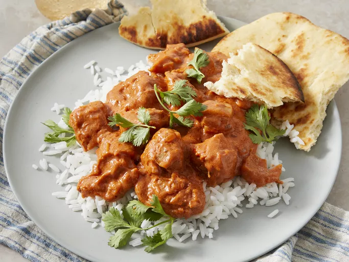

This butter chicken recipe, or chicken makhani, is one of my favorite Indian dishes. It features a full-flavored sauce that complements the chicken well. It can be made as mild or spicy as you wish by adjusting the cayenne. Serve with basmati rice and naan bread.
Heat 1 tablespoon oil in a large saucepan over medium-high heat. Sauté shallot and onion until soft and translucent, about 5 minutes.
Stir in butter, ginger-garlic paste, lemon juice, 1 teaspoon garam masala, chili powder, cumin, and bay leaf. Cook and stir for 1 minute. Add tomato sauce, and cook for 2 minutes, continuing to frequently stir.
Stir in half-and-half and yogurt. Reduce heat to low, and simmer for 10 minutes, frequently stirring. Season with salt and pepper. Remove from heat and set aside.
Heat remaining 1 tablespoon oil in a large heavy skillet over medium heat. Cook chicken until lightly browned, about 10 minutes.
Reduce heat, and season with remaining 1 teaspoon garam masala and cayenne. Stir in a few spoonfuls of sauce, and simmer until liquid has reduced, and chicken is no longer pink. Add cooked chicken into sauce and stir together.
Dissolve cornstarch into water, then mix into the sauce. Cook for 5 to 10 minutes, or until thickened.
Serve over rice with naan.